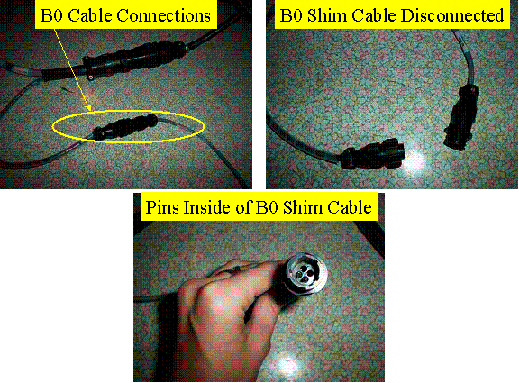
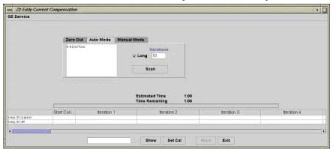
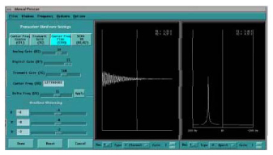

Z2 Eddy Current Compensation (Z2 ECC)
Prerequisites
If the site needed to perform the shim supply modifications and Z2 CRM modification as a part of FMI 60648 before the upgrade to e2, then Z2 calibrations must be performed. You will know if your site needs to perform Z2 ECC calibration if your site has the 8-channel shim supply and the pigtail B0 shim cable shown below.
Figure 1. B0 Cable Connector

1 Introduction
The effectiveness of high order shimming on the 3T VH/i scanner has a great impact on the image quality, such as functional imaging and spectroscopy. On the 3T/94 magnet, it has been found that the Z2 component of the high order shimming process contains eddy currents that produce undesired magnetic fields negatively effecting image quality. These undesired magnetic fields need to be measured and compensated for to improve image quality. The Z2 calibration tool uses a specially designed flat rectangular copper sulfate phantom. The tool uses an 8-channel high order shim supply to provide the necessary compensation to both a B0 coil that is wound around the CRM coil, and to the Z2 coil. Two channels of the shim supply are allocated for Z2 compensation (for the Z2 component and B0 induced Z2 component). The Z2 ECC tool provides a pre-emphasis compensation for Z2 in a similar fashion to which Grafidy3 provides gradient eddy current compensation for the X, Y and Z gradients. It consists of four parts: graphical user interface (GUI), data acquisition (PSD), real-time communication using SVAT, and data analysis using minilab. The creation of the Z2ECC calibration requires the user to run a localizer scan on a phantom and to adjust its position to within 5 mm as prescribed by the procedure. After the phantom is positioned, the user will run the B0 coil and Z2ECC functional check. If the functional check indicates Z2ECC must be run, user will run an automatic script. After selecting Automatic mode, the tool will automatically characterized the B0 coil running several iterations. It is expected that this process will take 5 to 6 hours to complete.
2 Z2 ECC Characterization
The following contains the steps in which the system will configure the Z2 hardware.
2.1 Localizer Scan and Phantom Position
Procedure
- notice
- Put the rectangular phantom on the top of the phantom positioner at the center of the head coil (remove the lower flat holder in the head coil so the sponge can sit lower).
- Landmark at the center of the phantom using the alignment lights.
- At the keypad on the magnet enclosure, press Landmark, then Advance to Scan.
- Set up and run a localizer scan. Refer to the table below for
the localizer scan protocol.
- After the scan is complete, select the image series from the Image Browser, and enable the grid.
- The figure below shows the axial, sagittal, and coronal images
of the phantom. The image should be at the center of the FOV. In the
sagittal view, the phantom ends should be located at 1=150 (+/-3)
and S=150 (+/-3). If the ends of the phantom do not fall into this
range, reposition the phantom and return to Step 4. If the ends of the phantom fall into this range, continue to the
next step.
Figure 2. Phantom Localizer Images

 |
2.2 Running Z2 Eddy Current Calibration Tool
Procedure
- In the Service Browser, click the Calibration tab and then click Z2 Eddy Current Compensation.
- In the tool window, select Click here to start the tool.
- After the tool loads, initialize all the cal values as follows:
- Click Zero Out tab (default)
- Click Select All
- Click Zero Out Cal Values, Message, Remove text files failednote:
You may see the following text: “No b0_coil_params.txt file, need to do B0 Characterization”. This means that the B0 characterization has not been run. Select OK.
- Click Auto Mode tab.
Figure 3. Z2 Eddy Current Compensation GUI

- Select Z Direction.
- Click Scan.
This starts the Z2 ECC tool. The Scan button is disabled throughout the process. The performance number is displayed in each iteration. The process stops if the maximum number of iterations is reached (default to 10), or both B0 and Z2 term reached the target values. (B0 spec = 1 Hz, target = 0.5 Hz, Z2 spec = 1 Hz, target = 0.5 Hz.) When the performance is under spec, the performance number is displayed as black. If the performance is under target, the performance number is displayed as green, and no more iterations are needed when it is green.
note:The first iteration is for B0 coil characterization, there is no Z2 fit. Do not click in the performance data under it. (Clicking generates a non-harmful Java error.) First iteration takes about 45 minutes.
You can view each iteration fit and measurement curve only after that iteration is finished.
The total process takes about 5 to 6 hours (for default 10 iterations). It could finish earlier if both Z2 and B0 meet target early. If the Scan button lights up, that means the process is done.
- Wait for the tool to finish Auto mode.
If all terms come within spec and the optimal calibration is shown on the last iteration, click the Exit button. All the performance data and cal values are saved to a log in the /usr/g/bin/z2ecc/log directory. The calibration is complete.
If the last iteration does not show the best fit possible, see Selecting Earlier Iteration Results to select an earlier iteration. The best fit possible has the smallest number.
2.3 Selecting Earlier Iteration Results
This makes sure that the best Z2ECC results are used to create the calibration file. This section must be performed before you exit the tool.
Procedure
- Switch to the Manual Mode tab.
- Click the cell with the best performance data (the cell that has the lowest 3 values). This cell is highlighted.
- Select Set Cal. The best fit result is
saved and downloaded to the system.
Figure 4. Setting Calibration File

- To confirm that the correct values were saved, double-click the same cell selected in Step 3. A plot of data should appear.
- Select More at the bottom of the plot to open a separate window with a list of “Previous Params.”
- Open a C-shell window. Type the following: cd /usr/g/caldirEnter, more resistive_shim_comp.txt. Enter
- Check if the corresponding cal values (z2 or B0) are the same
as the one displayed in the text as the ones listed after Previous
Params in Step 3.
Figure 5. Resitive_Shim_Comp.txt File Showing Previous Params

- If the values match, then the correct calibration file was loaded. Go to Center Frequency (CF) Stability Check to rerun the CF check. If the values do not match, you can attempt to reload the same calibration file again.
3 Z2 ECC Troubleshooting
If Z2 ECC does not converge, the following steps can be performed to assist with troubleshooting:
3.1 Enable Z2 HO Shim Supply
Procedure
- Open a C-shell.
- Type z2download -installEnter to download the executable image to the shim supply and then reboot the shim supply.
3.2 B0 Coil Check
This section makes sure that the B0 coil is connected correctly and shim supply responds correctly.
Procedure
- Keep the phantom setup and series the same as Step 4. Go to the Scan
page and click Auto prescan, and record the
center frequency.
CFO = ________________ (example: CFO = _127738007_)
- Place 0.15 amps into the B0 coil by going to the Service Desktop and opening a C-shell. Type the following: z2download -seterrchan 0.15Enter
- Go to the Scan page and click Auto prescan again. Record the center frequency.
CF1 = __________________ (example: CF1 = _127727976_)
- CF1 should be 20-30 Hz less than CFO.
-
If the center of the frequency does not change, there is a B0 coil connection or shim supply problem.
-
If the CFO-CF1 <0, then the B0 coil is polarity is wrong. Switch the polarity by exchanging the pins in the cable for Z2. See Figure 1. IMPORTANT: Be sure to remember to put the pins back into the same two holes that they were removed from! Test again.
-
- Set B0 current to 0 by going to the Service Desktop and opening a C-shell. Type the following: z2download -seterrchan 0Enter
3.3 Center Frequency (CF) Stability Check
This section determines the system response to resistive shim Z2 current inputs. It should be run before and after running the Z2 Eddy Current Calibration tool. This check confirms that the Z2 power supply, cables/filters, coil, and calibration are correctly working to significantly reduce the time that the center frequency changes when Z2 coil is activated.
Procedure
- Use the same phantom setup from Localizer Scan and Phantom Position.
- Setup protocol that is listed in Table 4; however, turn off autoshim.
- Select Save Series and then Auto Prescan.
- On the Scan page, right-click Research Operation, and then select Setup Params.
- Under window 1, set frame to 1,0 and click Done.
- Start Manual Prescan and select Center Freq Fine (CFH).
- In the Manual Prescan window, from the Windows menu select Two Windows. Set the first window type to 1 Channel and the second window type to P.Spect. Both windows should be on Rec 1.
- Open a command window. (Move the mouse over on the desktop frames, press Alt - F7 to move the window off-screen and expose the desktop, right-click, select Service Tools, and Command Window.)
- Type the following: setcurrent z2 1Enter
- The center frequency shifts off the center as shown below. Wait
a few seconds for it to stabilize.
Figure 6. CF When Z2 Current Is Set to 1 Amp

- In the command window, type the following and begin taking a time measurement (in seconds) after you hit enter: setcurrent z2 0Enter
- Stop the time measurement after the CF has stabilized. This
can take up to 5-10 minutes.
Figure 7. CF When Z2 Current Is Set to 0 Amps

- If the time measurement is less than 30 seconds, the system has correct Z2 eddy current compensation. No further action is required. If the time measurement is greater than 30 seconds, then proceed to Step 1. Click Done to exit out of manual prescan, and end the exam. (This takes about 1 minute.)
4 Finalization
Finalization
No finalization steps.